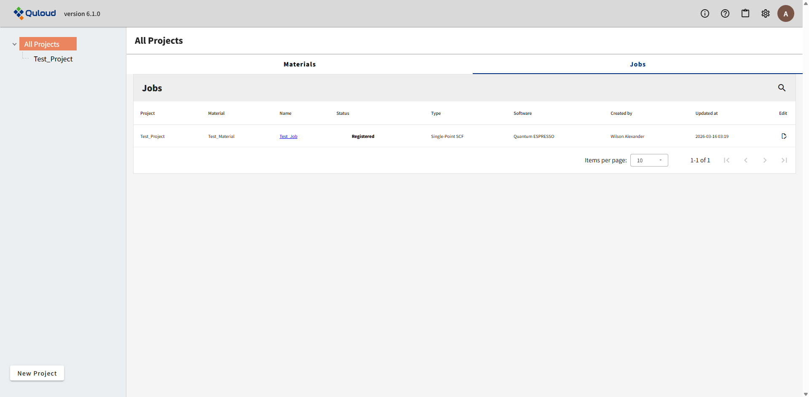
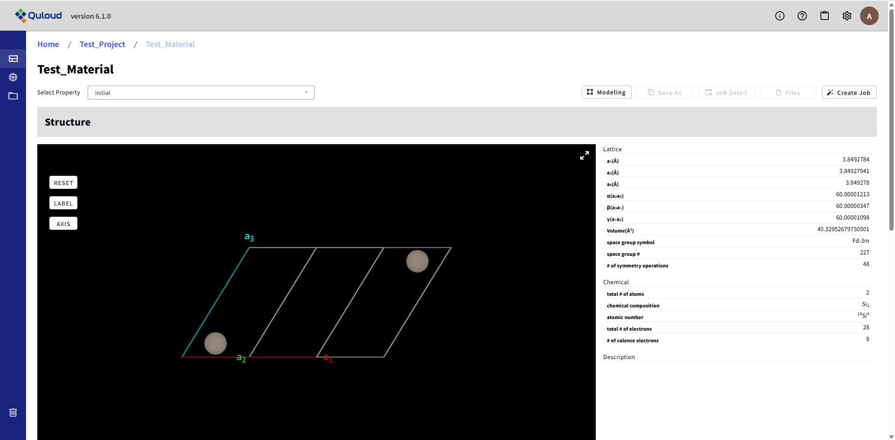
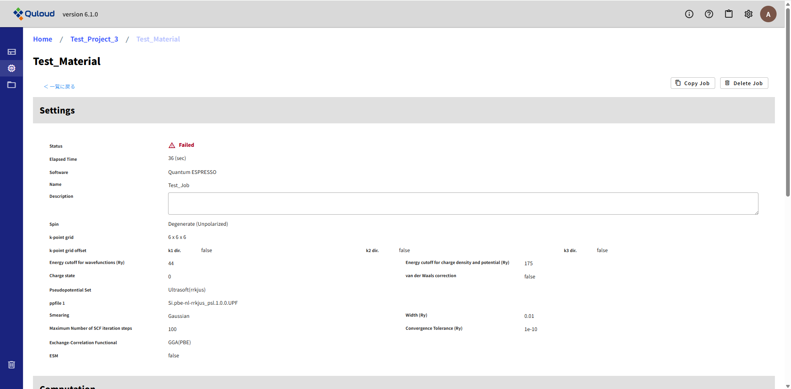
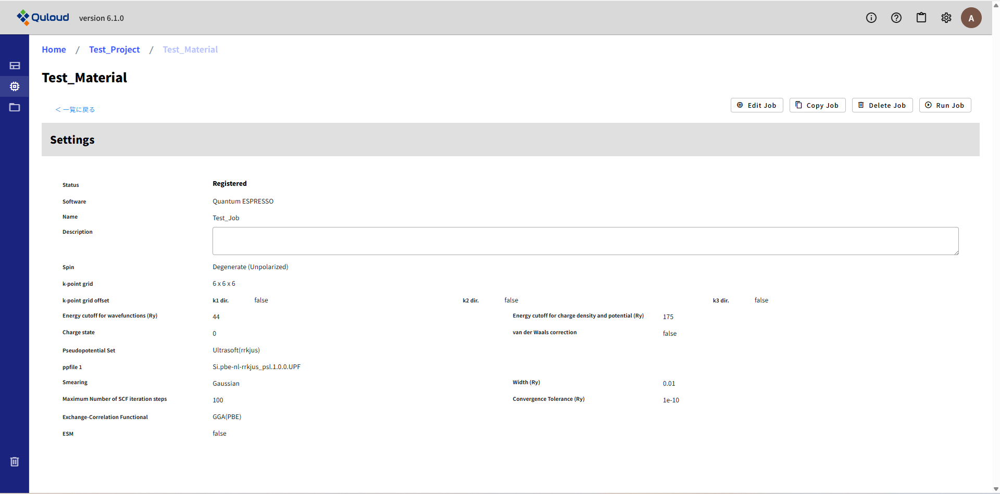
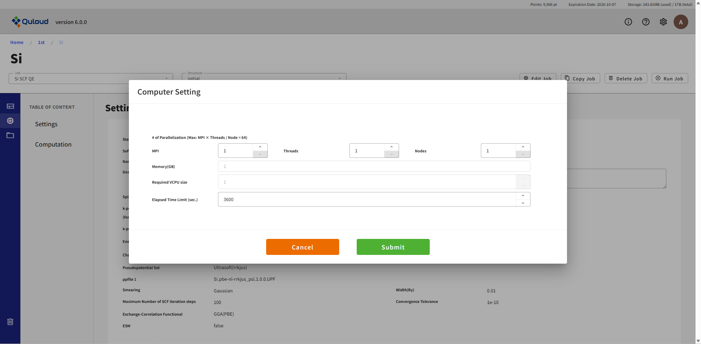
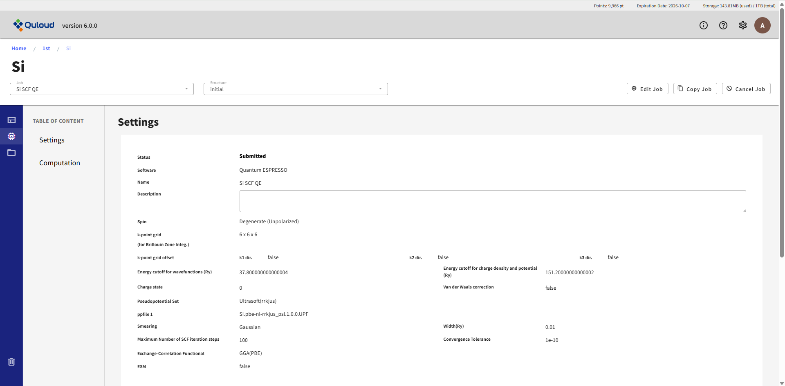
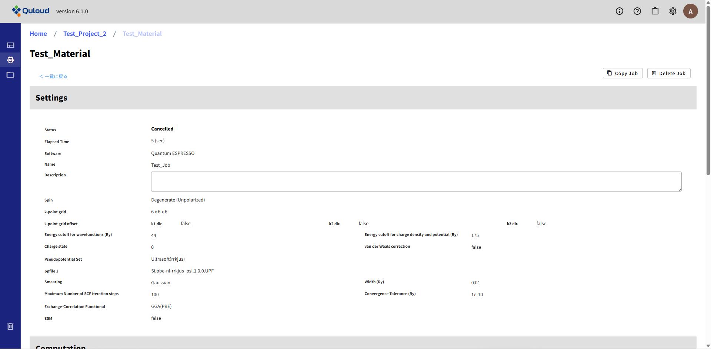
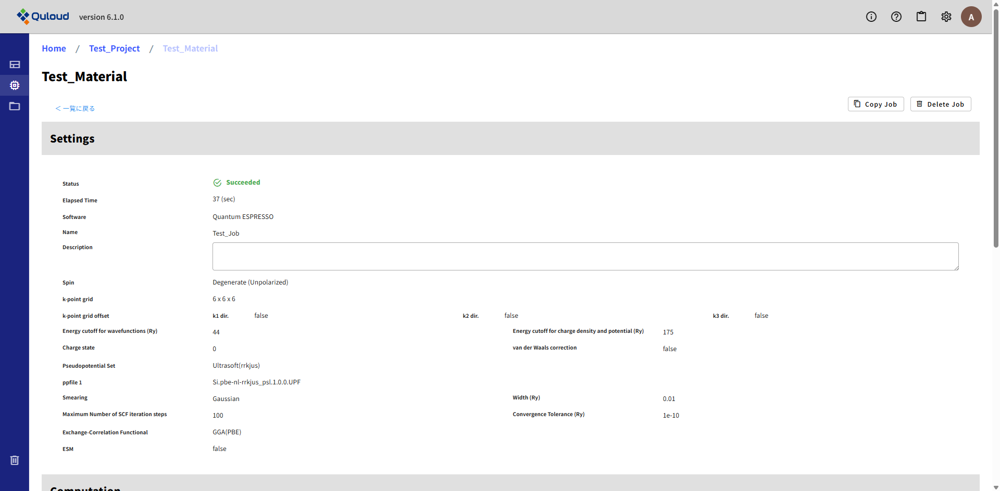
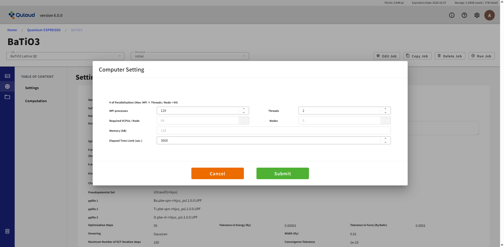
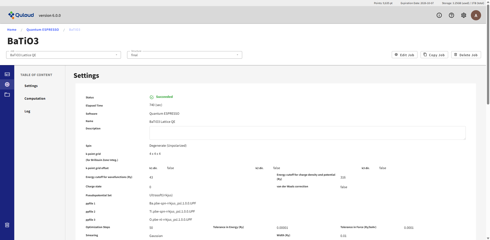

9. 計算 Job の実行
ここでは、計算 Job を登録（８章参照）した後、Job を実行・キャンセルするための方法と、Job 実行によるポイント消費量の確認方法を説明します。計算結果の確認については次章で説明します。
9.1. Job の実行とキャンセル
前章で説明した方法で Job の登録を行うと、当該 Job が TOP 画面の Job 一覧に追加されます。
登録直後は、Job の Status は Registered となっています。 Job の名前をクリックすると、関連する Material の詳細画面に移ります。
画面左上の「Job」タブで当該 Job を選択します。

左サイドメニューで「Job」を選択します。
すると、Job 登録時に設定した計算条件が表示されます。
Job を実行するには、右上の「Run Job」ボタンをクリックします。クリックすると、下図のようなダイアログが表示されます。
MPI 数、スレッド数、ノード数、計算時間の上限（Elapsed Time Limit (sec.)）を設定して「Submit」ボタンをクリックすると、Job が実行されます。 Job のデータが計算サーバに伝達されると、Status が「Submitted」になります。
計算が始まると、Job の Status が Running になります。

Job の実行をキャンセルする場合は、右上の「Cancel Job」ボタンをクリックします。 クリックすると、Status が Cancelled になります。
計算が終了し、Job が正常に完了した場合は Status が Succeeded になり、何らかの異常があった場合は Failed になります。
9.2. Job の実行によるポイント消費
Job の実行では、以下の計算式に従ってポイントが消費されます。
「消費ポイント」＝「Required VCPUs / Node」×「Nodes」×「計算時間 (h)」× 20
「Required VCPUs / Node」と「Nodes」は、「Run Job」ボタンをクリックした後に表示されるダイアログで確認できます。
「Required VCPUs / Node」と「Nodes」は、ここで設定する「MPI processes」と「Threads」により変化します。
また、計算時間は単位が時間 (h) なので、例えば 6 分（360 秒）の場合は 0.1 となります。 計算に費やした時間は、下図の「Elapsed Time」に表示されます。
ここでは単位が秒 (sec) で表示されていますので、上の計算式に当てはめる際には、数値を 3600 で割って代入してください。
なお、「Submit」ボタンで Job の実行を開始してから、Status が Succeeded（または Failed）になるまでの時間には、 Job 情報を計算サーバに伝達したり、計算結果をサーバから取得したりする時間も含まれているため、 「Elapsed Time」で表示される実際の計算時間とは異なりますのでご注意ください。